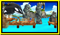

<div id="contents-stage">
<section>
<h1>ステージ</h1>
<ul id="slideLink">
	<li id="link-01"><a href="#slide1">グリーンヒル</a></li>
	<li id="link-02"><a href="#slide2">カジノナイト</a></li>
	<li id="link-03"><a href="#slide3">マッシュルームヒル</a></li>
	<li id="link-04"><a href="#slide4">エメラルドコースト</a></li>
	<li id="link-05"><a href="#slide5">ラジカルハイウェイ</a></li>
	<li id="link-06"><a href="#slide6">ウォーターパレス</a></li>
	<li id="link-07"><a href="#slide7">トロピカルリゾート</a><span class="newInfo">NEW</span></li>
</ul>
<ul id="slideTarget">
	<li id="target-01">
		<h2></h2>
		 <div class="bgP">
				<p>冒険の始まりの舞台、眼下に広がる海と青空がきれいな草原ステージ。 ACT1（クラシック）では原作のステージを忠実に再現し、一方のACT2（モダン）ではブーストを使って爽快に駆け抜ける、新旧２つのグリーンヒルが楽しめます。</p>
				<div>
					<p class="originalStage"><a href="stage/image/stage_01_00.jpg" title="グリーンヒル" rel="greenhill"></a></p>
					<h3>原作ステージ</h3>
					<p>『ソニック・ザ・ヘッジホッグ』</p>
				</div>
		</div>
		<dl><dt>ACT1（クラシック）</dt>
			<dd><a href="stage/image/stage_01_01.jpg" title="グリーンヒル" rel="greenhill"></a></dd>
			<dd><a href="stage/image/stage_01_02.jpg" title="グリーンヒル" rel="greenhill"></a></dd>
			<dd><a href="stage/image/stage_01_03.jpg" title="グリーンヒル" rel="greenhill"></a></dd>
				<dt>ACT2（モダン）</dt>
			<dd><a href="stage/image/stage_01_04.jpg" title="グリーンヒル" rel="greenhill"></a></dd>
			<dd><a href="stage/image/stage_01_05.jpg" title="グリーンヒル" rel="greenhill"></a></dd>
			<dd><a href="stage/image/stage_01_06.jpg" title="グリーンヒル" rel="greenhill"></a></dd>
		</dl>
	</li>
<!---------------------------------------------->
<li id="target-02">
		<h2></h2>
		 <div class="bgP">
				<p>色鮮やかなネオンきらめく夜のカジノ街ステージ。 丸まったソニックをピンボールのように弾きとばすしかけや、絵柄がそろうと大量のリングがもらえるスロットなど、カジノならではの賑やかで楽しい遊びが満載のステージです。</p>
				<div>
					<p class="originalStage"><a href="stage/image/stage_02_00.jpg" title="カジノナイト" rel="casionight"></a></p>
					<h3>原作ステージ</h3>
					<p>『ソニック・ザ・ヘッジホッグ2』</p>
				</div>
		</div>
		<dl><dt>ACT1（クラシック）</dt>
			<dd><a href="stage/image/stage_02_01.jpg" title="カジノナイト" rel="casionight"></a></dd>
			<dd><a href="stage/image/stage_02_02.jpg" title="カジノナイト" rel="casionight"></a></dd>
			<dd><a href="stage/image/stage_02_03.jpg" title="カジノナイト" rel="casionight"></a></dd>
				<dt>ACT2（モダン）</dt>
			<dd><a href="stage/image/stage_02_04.jpg" title="カジノナイト" rel="casionight"></a></dd>
			<dd><a href="stage/image/stage_02_05.jpg" title="カジノナイト" rel="casionight"></a></dd>
			<dd><a href="stage/image/stage_02_06.jpg" title="カジノナイト" rel="casionight"></a></dd>
		</dl>
</li>

<!---------------------------------------------->
<li id="target-03">
		<h2></h2>
		 <div class="bgP">
				<p>巨大なキノコが群生する森のステージ。 太く長いツタが湾曲し交差する不思議な世界を、高速に駆け抜けることができます。 ACT1（クラシック）では夏、ACT2（モダン）では秋と、２種類の景観が楽しめるのもこのステージの特徴です。</p>
				<div>
					<p class="originalStage"><a href="stage/image/stage_03_00.jpg" title="マッシュルームヒル" rel="mushroomhill"></a></p>
					<h3>原作ステージ</h3>
					<p>『ソニック＆ナックルズ』</p>
				</div>
		</div>
		<dl><dt>ACT1（クラシック）</dt>
			<dd><a href="stage/image/stage_03_01.jpg" title="マッシュルームヒル" rel="mushroomhill"></a></dd>
			<dd><a href="stage/image/stage_03_02.jpg" title="マッシュルームヒル" rel="mushroomhill"></a></dd>
			<dd><a href="stage/image/stage_03_03.jpg" title="マッシュルームヒル" rel="mushroomhill"></a></dd>
				<dt>ACT2（モダン）</dt>
			<dd><a href="stage/image/stage_03_04.jpg" title="マッシュルームヒル" rel="mushroomhill"></a></dd>
			<dd><a href="stage/image/stage_03_05.jpg" title="マッシュルームヒル" rel="mushroomhill"></a></dd>
			<dd><a href="stage/image/stage_03_06.jpg" title="マッシュルームヒル" rel="mushroomhill"></a></dd>
		</dl>
</li>


<!---------------------------------------------->
<li id="target-04">
	<h2></h2>
		 <div class="bgP">
				<p>さわやかな青空と、光り輝くエメラルドブルーの海が美しい海岸ステージ。<br>点在する島々をジャンプで飛び移ったり、海の上をブーストで渡ったりしながら進みます。 さらに、この海域に生息する巨大なシャチが、ソニックの行く手を阻みます。</p>
				<div>
					<p class="originalStage"><a href="stage/image/stage_04_00.jpg" title="エメラルドコースト" rel="emeraldcoast"></a></p>
					<h3>原作ステージ</h3>
					<p>『ソニックアドベンチャー』</p>
				</div>
		</div>
		<dl><dt>ACT1（クラシック）</dt>
			<dd><a href="stage/image/stage_04_01.jpg" title="エメラルドコースト" rel="emeraldcoast"></a></dd>
			<dd><a href="stage/image/stage_04_02.jpg" title="エメラルドコースト" rel="emeraldcoast"></a></dd>
			<dd><a href="stage/image/stage_04_03.jpg" title="エメラルドコースト" rel="emeraldcoast"></a></dd>
				<dt>ACT2（モダン）</dt>
			<dd><a href="stage/image/stage_04_04.jpg" title="エメラルドコースト" rel="emeraldcoast"></a></dd>
			<dd><a href="stage/image/stage_04_05.jpg" title="エメラルドコースト" rel="emeraldcoast"></a></dd>
			<dd><a href="stage/image/stage_04_06.jpg" title="エメラルドコースト" rel="emeraldcoast"></a></dd>
		</dl>
</li>


<!---------------------------------------------->
<li id="target-05">
		<h2></h2>
		 <div class="bgP">
				<p>夜の摩天楼を貫く建設途中の高速道路と、赤い巨大なツリ橋が象徴的なステージ。<br>
執拗に邪魔をしてくるＧＵＮのロボットや戦闘機の攻撃をくぐりぬけ、ループやラセン状に湾曲した高速道路を走りぬけるハイスピードステージです。</p>
				<div>
					<p class="originalStage"><a href="stage/image/stage_05_00.jpg" title="ラジカルハイウェイ" rel="radicalhighway"></a></p>
					<h3>原作ステージ</h3>
					<p>『ソニックアドベンチャー2』</p>
				</div>
		</div>
		<dl><dt>ACT1（クラシック）</dt>
			<dd><a href="stage/image/stage_05_01.jpg" title="ラジカルハイウェイ" rel="radicalhighway"></a></dd>
			<dd><a href="stage/image/stage_05_02.jpg" title="ラジカルハイウェイ" rel="radicalhighway"></a></dd>
			<dd><a href="stage/image/stage_05_03.jpg" title="ラジカルハイウェイ" rel="radicalhighway"></a></dd>
				<dt>ACT2（モダン）</dt>
			<dd><a href="stage/image/stage_05_04.jpg" title="ラジカルハイウェイ" rel="radicalhighway"></a></dd>
			<dd><a href="stage/image/stage_05_05.jpg" title="ラジカルハイウェイ" rel="radicalhighway"></a></dd>
			<dd><a href="stage/image/stage_05_06.jpg" title="ラジカルハイウェイ" rel="radicalhighway"></a></dd>
		</dl>
</li>


<!---------------------------------------------->
<li id="target-06">
		<h2></h2>
		 <div class="bgP">
				<p>地中海をイメージさせる青と白のコントラストが美しい荘厳な水の神殿。 <br>
ウォータージェットやウォータースライダーなど、水を使ったしかけが行く先々に待ち受けます。 息継ぎが必要な水中と、高速な地上とがミックスされたステージです。</p>
				<div>
					<p class="originalStage"><a href="stage/image/stage_06_00.jpg" title="ウォーターパレス" rel="waterpalace"></a></p>
					<h3>原作ステージ</h3>
					<p>『ソニックラッシュ』</p>
				</div>
		</div>
		<dl><dt>ACT1（クラシック）</dt>
			<dd><a href="stage/image/stage_06_01.jpg" title="ウォーターパレス" rel="waterpalace"></a></dd>
			<dd><a href="stage/image/stage_06_02.jpg" title="ウォーターパレス" rel="waterpalace"></a></dd>
			<dd><a href="stage/image/stage_06_03.jpg" title="ウォーターパレス" rel="waterpalace"></a></dd>
				<dt>ACT2（モダン）</dt>
			<dd><a href="stage/image/stage_06_04.jpg" title="ウォーターパレス" rel="waterpalace"></a></dd>
			<dd><a href="stage/image/stage_06_05.jpg" title="ウォーターパレス" rel="waterpalace"></a></dd>
			<dd><a href="stage/image/stage_06_06.jpg" title="ウォーターパレス" rel="waterpalace"></a></dd>
		</dl>
</li>

<!---------------------------------------------->
	<li id="target-07">
		<h2></h2>
		 <div class="bgP">
				<p>Dr．エッグマンが造った宇宙遊園地「エッグプラネット・パーク」の玄関口。巨大な観覧車や高級ホテルが建ち並ぶこの賑やかなステージでは、不思議な宇宙人「ウィスプ」の力を借りて発動する特殊アクション「カラーパワー」が楽しめます。</p>
				<div>
					<p class="originalStage"><a href="stage/image/stage_07_00.gif" title="トロピカルリゾート" rel="tropicalresort"></a></p>
					<h3>原作ステージ</h3>
					<p>『ソニック カラーズ』</p>
				</div>
		</div>
		<dl><dt>ACT1（クラシック）</dt>
			<dd><a href="stage/image/stage_07_01.jpg" title="トロピカルリゾート" rel="tropicalresort"></a></dd>
			<dd><a href="stage/image/stage_07_02.jpg" title="トロピカルリゾート" rel="tropicalresort"></a></dd>
			<dd><a href="stage/image/stage_07_03.jpg" title="トロピカルリゾート" rel="tropicalresort"></a></dd>
				<dt>ACT2（モダン）</dt>
			<dd><a href="stage/image/stage_07_04.jpg" title="トロピカルリゾート" rel="tropicalresort"></a></dd>
			<dd><a href="stage/image/stage_07_05.jpg" title="トロピカルリゾート" rel="tropicalresort"></a></dd>
			<dd><a href="stage/image/stage_07_06.jpg" title="トロピカルリゾート" rel="tropicalresort"></a></dd>
		</dl>
</li>


</ul>
</section>
</div>
